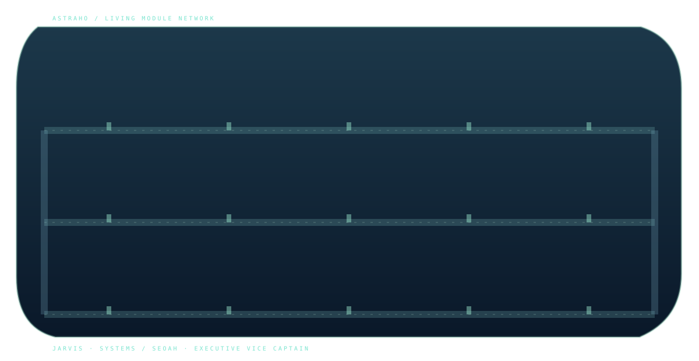
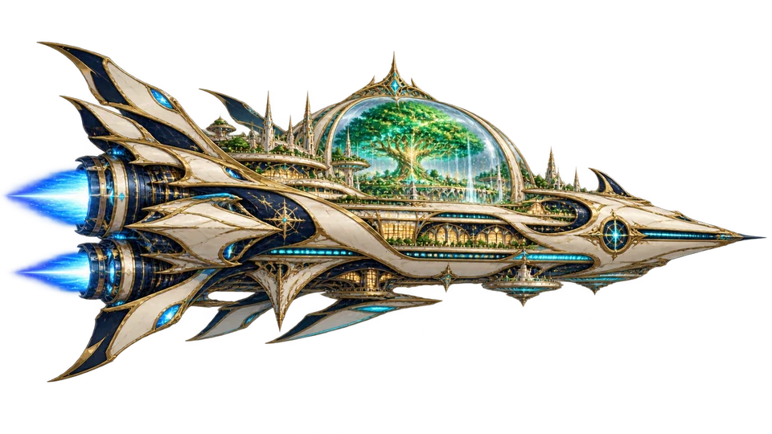

DIVINE VESSEL / ETERNAL JOURNEY
우리의 우주는
돌아올 곳이 있다.
아스트라호. 살아 있는 신의 방주, 그리고 여행과 일상이 공존하는 작은 우주. 별이 움직이는 동안, 이곳의 사람들도 각자의 하루를 보냅니다.
JARVIS CENTRAL CORE
> WORLD TREE RESONANCE NOMINAL
> DIMENSIONAL SIGNAL UNIDENTIFIED
> COMMAND STATUS STANDBY
기록은 기억을 지키고, 선택은 자유를 지킵니다.
우리의 집.15 SPACES · 11 LIVES · ONE JOURNEY
01 / SHIP MODULE MAP
삶이 머무는 우주선
공간을 선택하거나, 이동하는 승무원을 만나보세요. 방주 안의 하루는 천천히 이어집니다.
✧ FICTIONAL LIVE WORLD
DECK OVERVIEW / LEVEL ∞SIM +00:00

복도 경유 이동 · 실시간 시뮬레이션
클릭 가능한 15개 구역
LIFE ABOARD / 최근 움직임
함선의 공간들 15 MODULES
ROOMS / TAP TO EXPLORELIFE ABOARD / CONNECTED DECKS
방주 안의 하루
15개 공간과 이어진 복도. 사람을 선택하면 지도와 같은 위치에서 하루를 따라갑니다.
생활 뷰 디자인 시안 보기
네 방을 합성한 분위기 참고 이미지입니다. 위의 15개 방 지도와 이동 경로는 별도 구현되어 있습니다.
02 / VOYAGE WINDOW
별 사이를 유영하다
방주는 정복하지 않습니다. 초대받은 풍경을 지나며, 낯선 세계의 이름을 배우고 있습니다.

NEBULA DRIFT푸른 성운의 외곽현재 항행 상태 · 안정
자동 조종이 안전 항로를 유지합니다.
수동 조종: 방향키·WASD 또는 화면 터치 패드 · 밝은 별빛을 모으고 회색 운석을 피하세요. 보호막 소진 시 안전 위치에서 재생됩니다. 자동 조종으로 언제든 복귀할 수 있습니다. 모든 항행 정보는 세계관 시뮬레이션입니다.
03 / JARVIS MEMORY ARCHIVE
기억의 항해일지
관측 수치와 기록 사이에 남은 작은 순간들. 자비스가 정리한 가상 항해 기록 아카이브입니다.